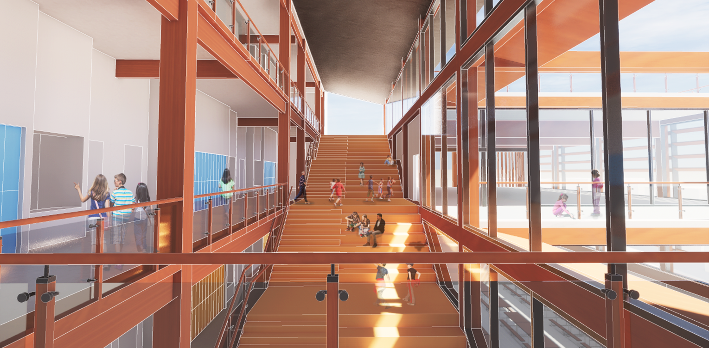
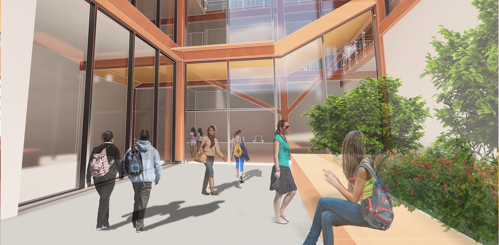
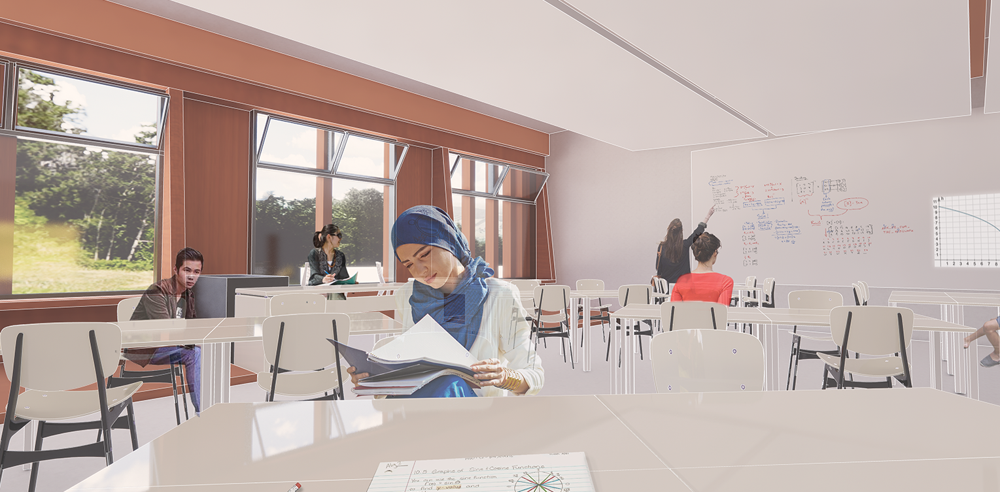
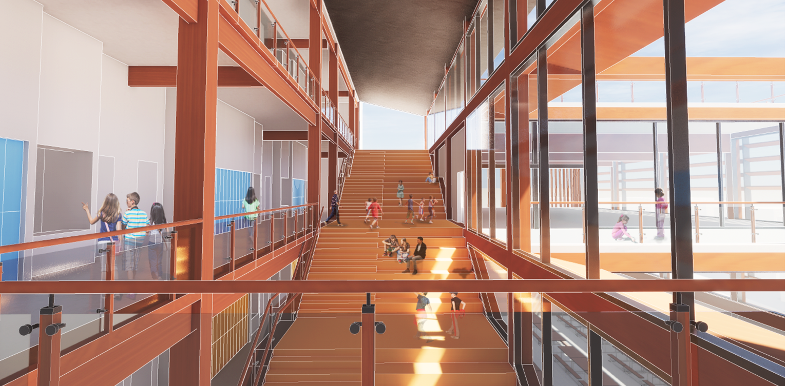
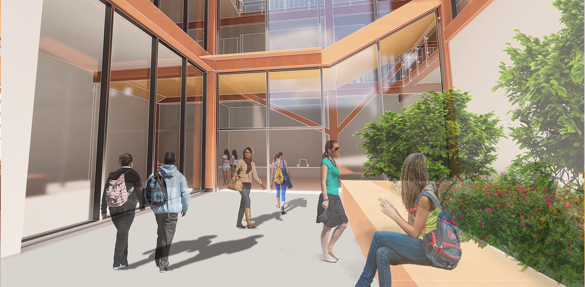
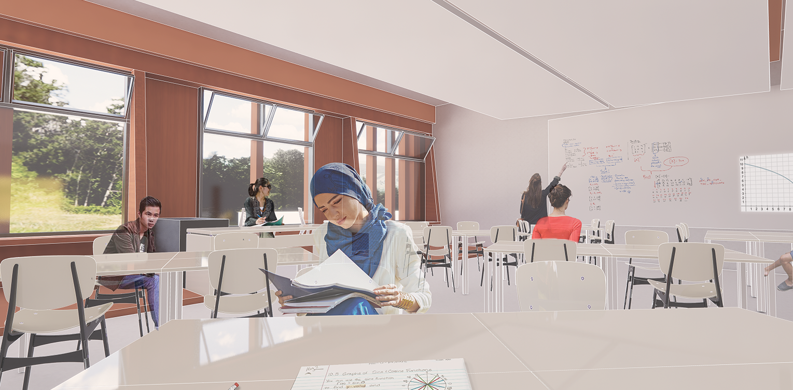

Environmental Charter School
an environmental charter school for grades 6-8 in Carrick
Pittsburgh, PA
Environmental Charter School
The focus for the design of this Environmental Charter School was to introduce new learning spaces that are uncommon in schools and rethinking the idea of classrooms. Rather than keeping education confined within four rectilinear walls, this design focused on the spaces outside the classrooms. The building itself also considered various environmental objectives such as solar shading, natural stack ventilation, and water retention to increase the efficacy of the architecture.
As you enter the middle school, you pass a patch of greenery that exemplifies the school’s vision of environmental awareness and are greeted by receptionist. From this location, the circulation bifurcates into two different paths; the left side with a lobby that leads to a staircase for students and faculty and the other side a hallway that leads to different functional spaces in the facility for staff. The hallway also directs the public into the cafetorium for public gatherings and events outside of school hours. This bifurcation allows for safety and security which is achieved through the separation of potential public access from the private student learning environment.
 





For the students, each programmatic element branches off of a central, extensive social staircase that bisects the site. The social staircase provides an open space where students can socialize and learn in a collaborative environment. Under the staircase exists a branch-like framing system that houses collaboration spaces for smaller group activities or individual work. On the exterior facade, following down the central staircase, is an exposed water retention system which directs rainwater from a green roof to a blue roof to a rain garden. This exposed system allows for visual learners to appreciate and learn about various environmental networks.
Each floor landing of the staircase leads to major programmatic spaces: the second floor landing allows access to the support tower, the third floor landing directs people into the thinklab, and the fourth floor landing opens out onto the green roof. This system allows each grade level to interact with each other through an interweaving circulation, which is important for social education. To engender inclusivity, the landings were extended to enable handicapped students to utilize the staircase as a social space along with fellow students.